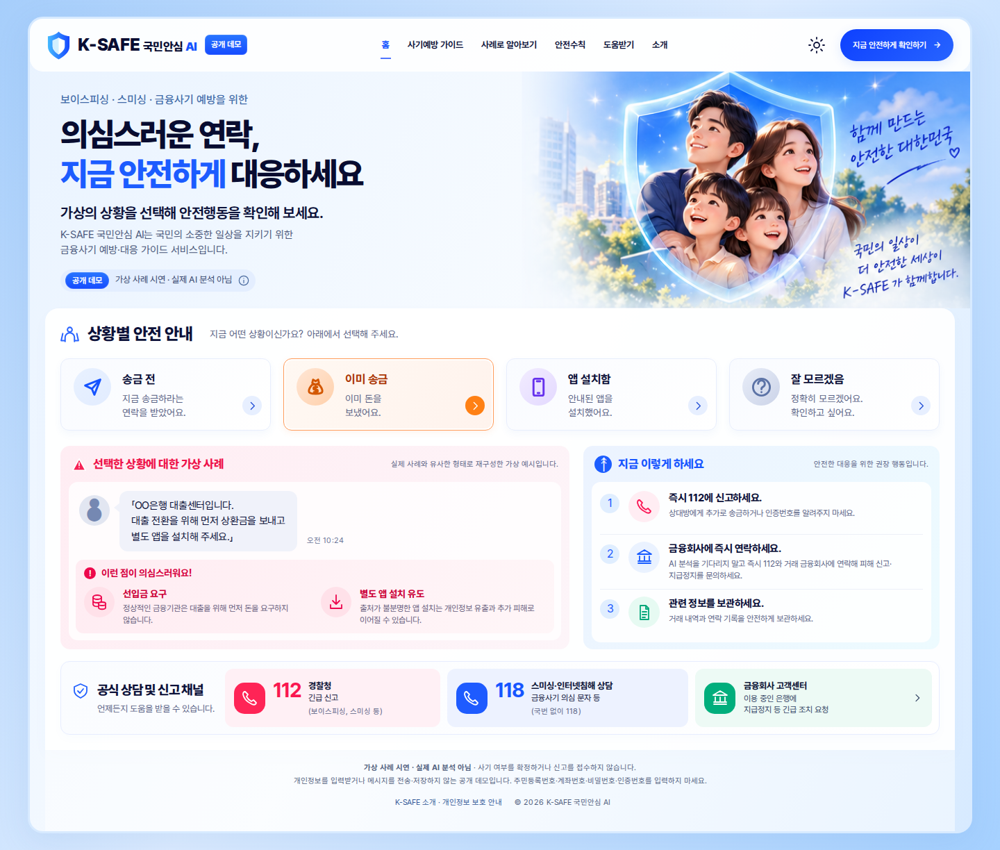
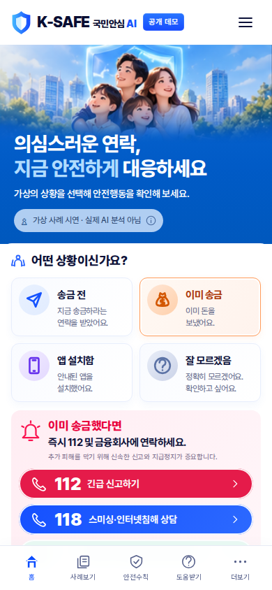

원본 합성 목업에서 데스크톱과 모바일의 앱 영역을 나누어 표시합니다. 구현은 실제 Playwright 캡처입니다. 화면 너비와 세로 길이가 달라 이미지 전체의 픽셀 차이 점수는 계산하지 않았습니다. 원본에 있는 휴대전화 프레임·상태 표시줄은 구현 대상에서 제외했습니다.


차이: 접근성을 위해 긴급 버튼의 분홍색을 약간 어둡게 보정했습니다. 모바일에서도 가상 메시지·위험 단서·단계별 안전행동·개인정보 안내를 제공하므로 아래로 스크롤할 수 있습니다. 안전 안내 문구는 기존 로직을 유지하며 상담 118의 설명을 정확하게 표시했습니다.